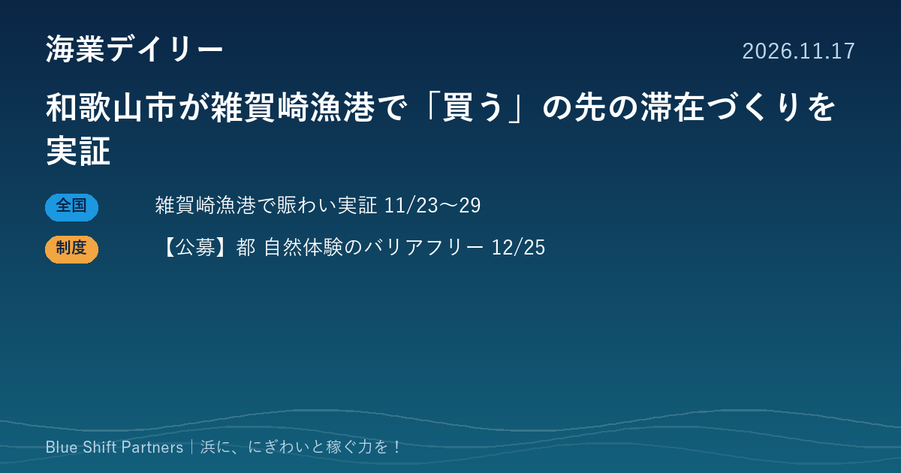

2026.11.17
和歌山市が雑賀崎漁港で「買う」の先の滞在づくりを実証

和歌山市が、雑賀崎漁港の船上販売を核に、飲食や休憩の場を加えて来訪者の滞在を延ばす実証実験を11月23日から行います。あわせて、海辺の自然体験をバリアフリーにする東京都の補助金（12月25日必着）をお知らせします。
和歌山市、雑賀崎漁港で船上販売を核にした賑わいづくりの実証実験（11/23〜29）
和歌山市は、雑賀崎・田野エリアの地域ブランド化に向けて、雑賀崎漁港で「船上販売」を核にした賑わいづくりの実証実験を11月23日（月・祝）から29日（日）まで行います。漁港内に仮設の実証店舗と休憩スペースを設け、船上販売で買った鮮魚の下処理もできるようにします。実証店舗の営業は12時〜17時の予定で、11月24日は休みです（船上販売は24日と28日が休み）。荒天などで中止する場合があります。来訪者へのアンケートと事業者へのヒアリングで、満足度や動線、消費の状況を調べます。
ここがポイント：魚を「買って帰る」だけでなく、「食べる・くつろぐ・景色を眺める」まで漁港で過ごしてもらう試みです。直売や朝市を持つ浜にとって、滞在時間と消費を増やす仕掛けを小さく試して数字で確かめる進め方の参考になります。
出典：和歌山市「雑賀崎漁港における賑わい創出に向けた実証実験」（PR TIMES）（2026-11-16）
【公募】東京都「誰もが楽しめる自然体験型観光推進事業補助金」、海辺の体験のバリアフリー化に（12/25必着）
東京都は、障害者や高齢者なども自然を楽しめるプログラムを提供する都内の自然体験型観光事業者と、事業者に備品を無料で貸し出す都内の観光協会などを対象に、補助金の申請を受け付けています。対象は、障害者等向けの備品の購入、持っている備品の改造、施設整備の費用で、補助率は5分の4、上限は備品の購入・改造のみなら200万円、施設整備を伴えば500万円です。締切は12月25日（金）必着で、予算額に達した時点で受付を終わります。申請は簡易書留での郵送、jGrants（GビズIDプライムが必要）、持参のいずれかで、提出先は産業労働局観光部受入環境課です。
ここがポイント：都のページには、海辺のアクセスマット、船に車いすを固定する器具、乗船用スロープ、車いす利用者向けのSUPの改造といった例が挙がっています。伊豆諸島・小笠原や東京湾岸で海の体験を提供する事業者や観光協会は、受け入れの幅を広げる設備に充てられます。GビズIDプライムは新規登録の審査に2〜3週間程度かかるとされているため、早めの準備が必要です。
出典：東京都産業労働局「誰もが楽しめる自然体験型観光推進事業補助金」（2026-11-17）
雑賀崎の実証は、船上販売という浜の強みはそのままに、「休む場所」と「食べる場所」を足して滞在を延ばせるかを確かめる試みです。浜の稼ぐ力は、売る量だけでなく、来た人にどれだけ長く楽しく過ごしてもらえるかでも伸ばせます。設備を整える前に期間限定で試し、アンケートで手応えを測る進め方は、どの浜でもまねしやすい一歩です。